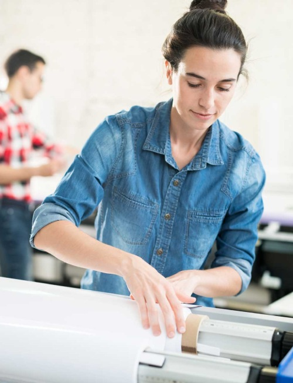

Impressão e publicidade · MaiaDa ideia
Da ideia
à peça.
Um cartão, uma montra ou um brinde.
Comece pelo que quer comunicar.

Artes gráficasVinilTêxteisBrindesAcabamentos
O que vai
ganhar forma?
Explore os serviços por tipo de trabalho. Em cada área encontra exemplos e informação que ajuda a preparar o pedido.
Artes gráficas
Papel para apresentar, identificar e comunicar.
02Vinil e grande formato
Comunicação aplicada a montras, viaturas e superfícies.
03Expositores e sinalética
Peças para apresentar e orientar num espaço.
04Têxteis
Peças têxteis para personalizar.
05Brindes
Objetos que podem acompanhar a sua marca.
Ver todos os serviçosAntes de contactarUma ideia mais clara.
Uma ideia mais clara.
Um pedido mais útil.
- 01
A peça
O que pretende produzir e onde será utilizado.
- 02
Os detalhes
Quantidade, formato e dimensões, quando os souber.
- 03
A referência
Ficheiro gráfico, artigo de catálogo ou uma imagem da ideia.